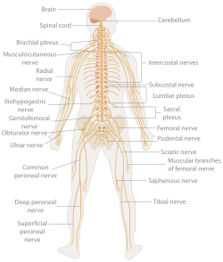
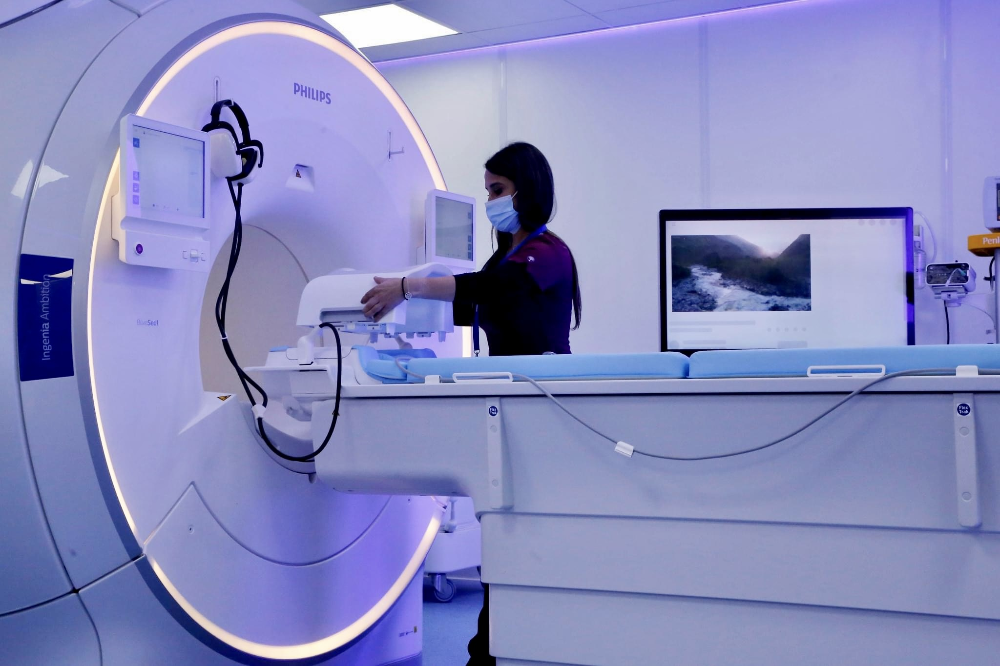

Examen neurológico
Un examen neurológico es la evaluación de las respuestas motoras y de las neuronas sensoriales , especialmente los reflejos , para determinar si el sistema nervioso está afectado. Esto generalmente incluye un examen físico y una revisión del historial médico del paciente , [ 1 ] pero no una investigación más profunda como la neuroimagen . Puede utilizarse tanto como herramienta de cribado como de investigación, la primera cuando se examina al paciente sin que se espere un déficit neurológico y la segunda cuando se examina a un paciente en el que se espera encontrar anomalías. [ 2 ] Si se encuentra un problema ya sea en un proceso de investigación o de cribado, entonces se pueden realizar pruebas adicionales para centrarse en un aspecto particular del sistema nervioso (como punciones lumbares y análisis de sangre ).
En general, un examen neurológico se centra en determinar si existen lesiones en los sistemas nerviosos central y periférico o si existe otro proceso difuso que esté afectando al paciente. [ 2 ] Una vez que el paciente ha sido examinado exhaustivamente, corresponde al médico determinar si estos hallazgos se combinan para formar un síndrome médico o un trastorno neurológico reconocible , como la enfermedad de Parkinson o la enfermedad de la neurona motora . [ 2 ] Finalmente, corresponde al médico encontrar la causa de dicho problema, por ejemplo, determinar si se debe a una inflamación o si es congénito. [ 2 ]

Historial del paciente
La historia clínica del paciente es la parte más importante de un examen neurológico [ 2 ] y debe realizarse antes de cualquier otro procedimiento, a menos que sea imposible (es decir, si el paciente está inconsciente, ciertos aspectos de su historia clínica adquirirán mayor importancia según el motivo de consulta). [ 2 ] Los factores importantes que deben considerarse en la historia clínica incluyen:
- Momento de aparición, duración y síntomas asociados (por ejemplo, si la queja es crónica o aguda ) [ 4 ]
- de consumo de drogas [ 2 ]
- Historia familiar y social [ 2 ]
Interpretación
La lateralidad manual es importante para determinar el área del cerebro relevante para el lenguaje (ya que casi todas las personas diestras tienen el hemisferio izquierdo responsable del lenguaje). A medida que los pacientes responden preguntas, es importante comprender a fondo la queja y su evolución temporal. Es fundamental comprender el estado neurológico del paciente al momento del interrogatorio, así como su nivel de competencia en diversas tareas y el grado de deterioro que experimenta al realizarlas. El intervalo de tiempo de la queja es importante, ya que puede ayudar al diagnóstico. Por ejemplo, los trastornos vasculares (como los accidentes cerebrovasculares) ocurren con mucha frecuencia en cuestión de minutos u horas, mientras que los trastornos crónicos (como la enfermedad de Alzheimer) se desarrollan a lo largo de varios años. [ 2 ]
Realizar un examen general es tan importante como el examen neurológico, ya que puede aportar pistas sobre la causa de la dolencia. Esto se demuestra en casos de metástasis cerebrales donde la queja inicial fue una masa en la mama . [ 2 ]s
Los resultados de la exploración se toman en conjunto para identificar anatómicamente la lesión . Esta puede ser difusa (por ejemplo, enfermedades neuromusculares, encefalopatía) o muy específica (por ejemplo, sensación anormal en un dermatoma debido a la compresión de un nervio espinal específico por un depósito tumoral).
Los principios generales [ 6 ] incluyen:
- Se busca la simetría entre ambos lados: un lado del cuerpo sirve de referencia para el otro. Se determina si existe asimetría focal.
- Determinar si el proceso involucra el sistema nervioso periférico (SNP), el sistema nervioso central (SNC) o ambos. Considerar si el hallazgo (o los hallazgos) pueden explicarse por una sola lesión o si requiere un proceso multifocal.
- Determinar la ubicación de la lesión. Si el proceso afecta al SNC, aclarar si es cortical, subcortical o multifocal. Si es subcortical, aclarar si afecta a la sustancia blanca, los ganglios basales, el tronco encefálico o la médula espinal. Si el proceso afecta al SNP, determinar si se localiza en la raíz nerviosa, el plexo, el nervio periférico, la unión neuromuscular, el músculo o si es multifocal.

General
Historial del paxciente
Interpretación